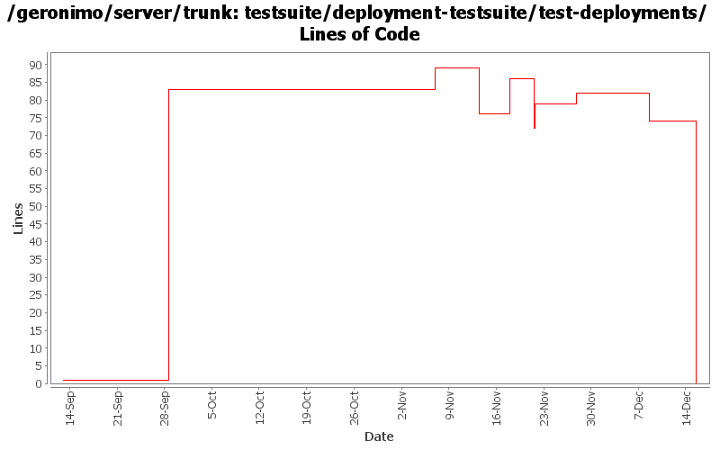

[root]/testsuite/deployment-testsuite/test-deployments
 src
(0 files, 0 lines)
src
(0 files, 0 lines)
 test
(0 files, 0 lines)
test
(0 files, 0 lines)
 java
(0 files, 0 lines)
java
(0 files, 0 lines)
 org
(0 files, 0 lines)
org
(0 files, 0 lines)
 apache
(0 files, 0 lines)
apache
(0 files, 0 lines)
 geronimo
(0 files, 0 lines)
geronimo
(0 files, 0 lines)
 testsuite
(0 files, 0 lines)
testsuite
(0 files, 0 lines)
 deployment
(0 files, 0 lines)
deployment
(0 files, 0 lines)
 resources
(0 files, 0 lines)
resources
(0 files, 0 lines)

| Author | Changes | Lines of Code | Lines per Change |
|---|---|---|---|
| Totals | 14 (100.0%) | 212 (100.0%) | 15.1 |
| prasad | 7 (50.0%) | 117 (55.2%) | 16.7 |
| jdillon | 6 (42.9%) | 94 (44.3%) | 15.6 |
| dain | 1 (7.1%) | 1 (0.5%) | 1.0 |
* reorganised such that manifestcp can now be built and tested under same pom.
0 lines of code changed in 1 file:
* moved ExtendedSelenium and SeleniumSupport to TestSupport
* it took along with it the TestNG dependency.
* TestNG dependency no longer needs to be specified in testsuite poms.
0 lines of code changed in 1 file:
Dropped jdk14 testng javadocs
Using @Test for class (clarity)
Using Surefire 2.3-SNAPSHOT, as that appears to work with TestNG w/JDK 1.5 annos
Using consistent spacing between elements
Dropped unused maven-invoker-plugin config
Put versioning of plugins all in the top-level build/pluginManagement
Added missing license on new xml files
6 lines of code changed in 1 file:
* moved testng dependency down to the actual testset pom that needs it.
* it was masking junit in those poms that needed junit.
8 lines of code changed in 1 file:
* moved maven-compiler-plugin to use jdk15 for source and target.
* moved tests in console and deployment suites to use TestNG annotations.
* introduced testng.xml for basic and test-deployments testsets.
* all tests now run and pass successfully.
3 lines of code changed in 1 file:
Changed version to 2.0-SNAPSHOT
1 lines of code changed in 1 file:
* beautify pom
* execute testsuite-maven-plugin:fix-menu
* introduce <distributionManagement> and ${deployDirectory} cli param
82 lines of code changed in 1 file:
* execute testsuite-maven-plugin to generate surefire reports for suite poms
2 lines of code changed in 1 file:
* configured maven-maven-plugin to execute in 'clean' and 'site' phase
* configured m-m-p in pluginManagement of testsuite pom.xml
* configured geronimo-maven-plugin in pluginManagement of default profile in testsuite pom.xml
* start/stop webconsole car in console suite.
22 lines of code changed in 1 file:
Using ${version} instead of ${pom.version} in a feeble attempt to get around ${pom.version} changing to its timestamp version for SNAPSHOT artifacts
4 lines of code changed in 1 file:
(GERONIMO-2444) Use integration-test packaging, moved deploy/undeploy to testsuite module
83 lines of code changed in 1 file:
Hook up basic, basic (maybe too basic) tests for testsupport/test-deployment-* ears
1 lines of code changed in 1 file:
Rename
0 lines of code changed in 2 files: